第 5 章 通货膨胀Causes, Effects, and Social Costs
对应文件：
notes5.pptx｜ 页码：5-1 ~ 5-61 ｜ 共 61 页本章是第 4 章的下游：既然 M 由 B、rr、cr 决定（第 4 章），那么 M 的增长如何变成通胀？答案是货币数量论。全章主线：数量方程 → 增长率形式 → π = ΔM/M − ΔY/Y → 费雪效应 → 社会成本 → 恶性通胀 → 古典二分法。
本章地图
| 区段 | 页码 | 内容 |
|---|---|---|
| 导论 | 5-1 ~ 5-4 | 章首、学习目标、美国通胀及其趋势 |
| 货币数量论 | 5-5 ~ 5-17 | 货币流通速度、数量方程、货币需求、增长率形式 |
| 数据检验 | 5-18 ~ 5-21 | 跨国散点、美国时间序列 |
| 铸币税 | 5-22 | 印钞筹资与通胀税 |
| 利率与费雪效应 | 5-23 ~ 5-28 | 名义/实际利率、费雪方程、48 国数据、应用题 |
| 货币需求函数 | 5-29 ~ 5-37 | 事前/事后实际利率、L(i,Y)、均衡、P 对 M 与 Eπ 的反应 |
| 常见误解 | 5-38 ~ 5-41 | 通胀不降低实际工资、古典观点 |
| 社会成本 | 5-42 ~ 5-50 | 五项预期通胀成本 + 未预期通胀再分配 + 不确定性 + 一项好处 |
| 恶性通胀 | 5-51 ~ 5-54 | 定义、成因、案例、政府为何为之 |
| 古典二分法 | 5-55 ~ 5-56 | 实际/名义变量、货币中性 |
| 总结 | 5-57 ~ 5-61 | 本章总结 |
5-1Chapter 5 Inflation
Chapter 5:
Inflation: Its Causes, Effects, and Social Costs
第 5 章
通货膨胀：成因、影响与社会成本
教师备注（原文＋译文）4 段
教师备注（原文照录）
Chapter 5 covers the quantity theory of money, a simple theory that explains the long-run behavior of inflation fairly well. It also introduces the money demand function, L(i,Y), that will be used in the IS-LM model in later chapters. Chapter 5 explains the social costs of inflation and concludes with a discussion of the Classical Dichotomy and Neutrality of Money, a central topic in monetary theory.
Mostly, the material is not difficult, but it is theoretical, especially the classical dichotomy and neutrality of money.
教师备注（译文）
第 5 章讲货币数量论——一个能较好解释通胀长期行为的简单理论。它还引入货币需求函数 L(i,Y)，该函数将在后面各章的 IS-LM 模型中使用。第 5 章解释通胀的社会成本，最后讨论古典二分法与货币中性，这是货币理论的核心议题。
材料大体不难，但偏理论，尤其是古典二分法与货币中性。
- 三个目标对应三段：成因（数量论，5-5 ~ 5-22）、影响（利率与货币需求，5-23 ~ 5-41）、社会成本（5-42 ~ 5-54）。
- 备注点出本章的两个「出口」：L(i,Y) 供 IS-LM 使用；古典二分法供长期/短期划分使用。
5-2IN THIS CHAPTER, YOU WILL LEARN
| 原文 | 中文对照 |
|---|---|
| IN THIS CHAPTER, YOU WILL LEARN: | 本章你将学到： |
| The classical theory of inflation | 古典通胀理论 |
| causes | 成因 |
| effects | 影响 |
| social costs | 社会成本 |
| "Classical"—assumes prices are flexible & markets clear | 「古典」——假设价格弹性、市场出清 |
| Applies to the long run | 适用于长期 |
- 「古典」在这里是方法论标签：价格弹性 + 市场出清 = 长期分析（对应 1-50、1-51 的划分）。
- 因此本章所有结论都是长期结论；短期的通胀动态（如 2021–2022 年）不在本章范围内。
5-3U.S. inflation and its trend, 1960-2014（第 1 帧）
| 原文 | 中文对照 |
|---|---|
| U.S. inflation and its trend, 1960-2014 | 美国通胀及其趋势，1960–2014 |
| % change in GDP deflator | GDP 平减指数的百分比变化 |
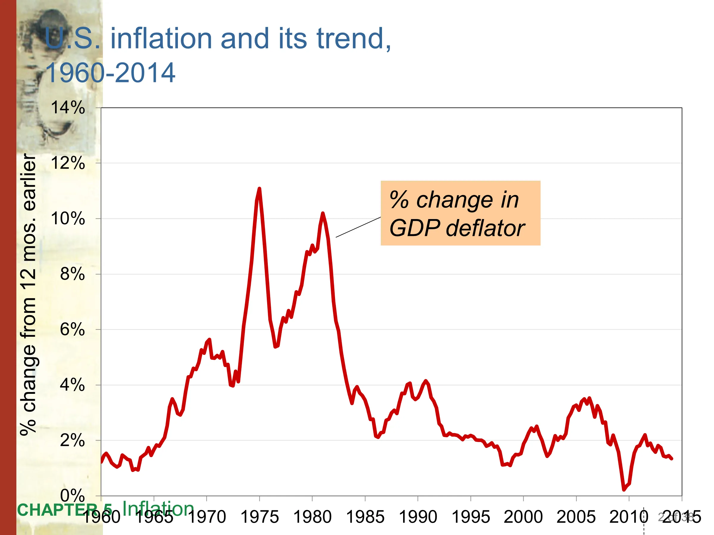
教师备注（原文＋译文）8 段
教师备注（原文照录）
Over the short run, the inflation rate can be volatile. In later chapters, we will learn about the forces that affect inflation in the short run. In this chapter, we focus on the long run.
Source: Federal Reserve Bank of St. Louis
http://research.stlouisfed.org/fred2/
GDPDEF (percent change from year ago)
教师备注（译文）
短期内通胀率可能波动很大。后面各章我们会学习影响短期通胀的力量。本章我们关注长期。
来源：圣路易斯联邦储备银行
http://research.stlouisfed.org/fred2/
序列 GDPDEF（同比百分比变化）
- 纵轴为 GDP 平减指数的同比变化率，横轴 1960–2014；曲线在 1970 年代中后期达到约 10% 的峰值，1980 年代后回落至 2%–4%。
- 短期波动剧烈（月度/年度锯齿），这正是备注强调「本章只看长期」的原因。
5-4U.S. inflation and its trend, 1960-2014（第 2 帧）
| 原文 | 中文对照 |
|---|---|
| U.S. inflation and its trend, 1960-2014 | 美国通胀及其趋势，1960–2014 |
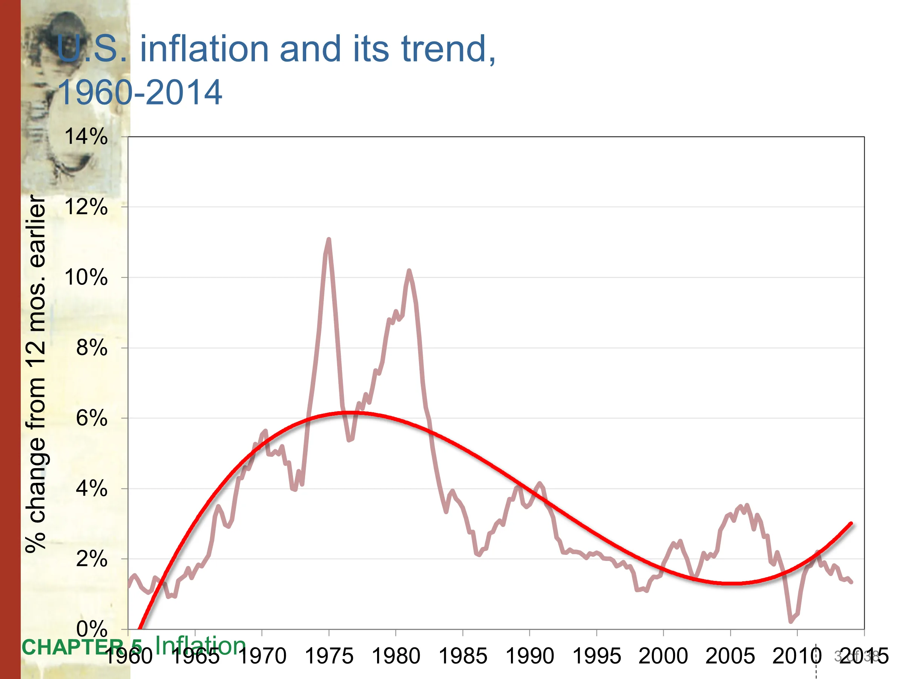
教师备注（原文＋译文）6 段
教师备注（原文照录）
. . . the long-run trend behavior of inflation. We will learn a simple theory of inflation over the long run and see that its predictions are very consistent with U.S. and international data.
Note about the graph:
The long-run trend line was produced in Excel, type polynomial order 3.
教师备注（译文）
……通胀的长期趋势行为。我们将学习一个关于长期通胀的简单理论，并看到它的预测与美国及国际数据高度一致。
关于本图的说明：
长期趋势线在 Excel 中生成，类型为三次多项式。
- 趋势线是三次多项式拟合（备注说明），不是理论推导的结果——它只用于显示「趋势」的形状。
- 趋势的形状：1960 年代约 1.5% → 1970 年代末约 9% → 1980 年代后回落至约 2%。
5-5The quantity theory of money（货币数量论）
| 原文 | 中文对照 |
|---|---|
| The quantity theory of money（货币数量论） | 货币数量论 |
| A simple theory linking the inflation rate to the growth rate of the money supply. | 一个把通胀率与货币供给增长率联系起来的简单理论。 |
| Begins with the concept of velocity… | 从货币流通速度的概念开始…… |
- 一句话概括全章：通胀是货币增长过快的结果（长期）。这是本章要证明的命题。
- 理论结构：速度 → 数量方程 → 假设 V 不变 → π = ΔM/M − ΔY/Y。
5-6Velocity
| 原文 | 中文对照 |
|---|---|
| Velocity | 货币流通速度 |
| Basic concept: the rate at which money circulates | 基本概念：货币周转的速率 |
| Definition: the number of times the average dollar bill changes hands in a given time period | 定义：在给定时期内，平均每一美元易手的次数 |
| Example: In 2024, | 例：2024 年， |
| $500 billion in transactions | 交易额 5,000 亿美元 |
| money supply = $100 billion | 货币供给 = 1,000 亿美元 |
| The average dollar is used in five transactions in 2024 | 2024 年平均每一美元被用于 5 次交易 |
| So, velocity = 5 | 所以，流通速度 = 5 |
教师备注（原文＋译文）2 段
教师备注（原文照录）
In order for $500 billion in transactions to occur when the money supply is only $100b, each dollar must be used, on average, in five transactions.
教师备注（译文）
要在货币供给只有 1,000 亿美元的情况下完成 5,000 亿美元的交易，每一美元平均必须被使用 5 次。
- 算例：500/100 = 5。这就是 V 的算术含义。
- 直觉：货币供给远小于交易额，是因为同一笔钱在一年内被反复使用。
5-7Velocity (continued)（第 1 帧）
| 原文 | 中文对照 |
|---|---|
| Velocity (continued) | 货币流通速度（续） |
| This suggests the following definition: | 这提示了如下定义： |
| where | 其中 |
| V = velocity | V = 流通速度 |
| T = value of all transactions | T = 全部交易的价值 |
| M = money supply | M = 货币供给 |
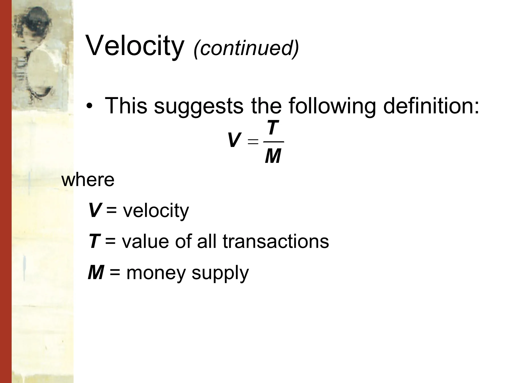
V = T / M
- 定义式：V = T/M（交易总值 ÷ 货币供给）。
- 问题：T（全部交易）难以统计，因为包含中间品交易与金融交易。所以 5-8 换用 GDP。
5-8Velocity (continued)（第 2 帧）
| 原文 | 中文对照 |
|---|---|
| Velocity (continued) | 货币流通速度（续） |
| Use nominal GDP as a proxy for total transactions. | 用名义 GDP 作为全部交易的代理变量。 |
| Then, | 于是， |
| where | 其中 |
| P = price of output (GDP deflator) | P = 产出价格（GDP 平减指数） |
| Y = quantity of output (real GDP) | Y = 产出数量（实际 GDP） |
| P × Y = value of output (nominal GDP) | P × Y = 产出价值（名义 GDP） |
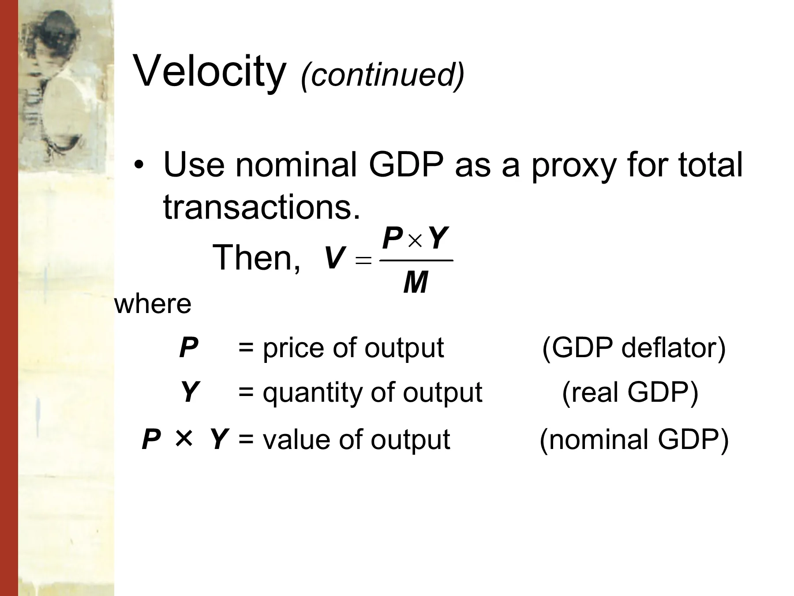
V = (P × Y) / M
教师备注（原文＋译文）6 段
教师备注（原文照录）
You might ask students if they know the difference between nominal GDP and the value of transactions.
Answer: Nominal GDP includes the value of purchases of final goods; total transactions also includes the value of intermediate goods.
Even though they are different, they are highly correlated. Also, our models focus on GDP, and there's lots of great data on GDP. So from this point on, we'll use the income version of velocity.
教师备注（译文）
你可以问学生是否知道名义 GDP 与交易价值之间的区别。
答案：名义 GDP 只包含最终产品购买的价值；全部交易还包含中间品的价值。
尽管两者不同，但高度相关。而且我们的模型关注 GDP，GDP 又有大量优质数据。所以从这一点起，我们使用「收入型」的流通速度。
- 两处替换：T → P×Y（名义 GDP），得到 V = PY/M。这就是教材通用的「收入型速度」。
- 名义 GDP 与总交易额的差别：是否包含中间品。二者水平不同但趋势高度相关，所以可替代。
5-9The quantity equation（数量方程）
| 原文 | 中文对照 |
|---|---|
| The quantity equation（数量方程） | 数量方程 |
| The quantity equation M × V = P × Y follows from the preceding definition of velocity. | 数量方程 M × V = P × Y 由前述流通速度的定义直接得出。 |
| It is an identity: it holds by definition of the variables. | 它是一个恒等式：由变量的定义即成立。 |
- 从 V = PY/M 两边乘 M 即得 M × V = P × Y，所以它是恒等式，不是理论。
- 「恒等式」的意义：它永远成立，因而本身不预测任何东西；要得到预测，必须加入假设（5-12 假设 V 不变）。
5-10Money demand and the quantity equation
| 原文 | 中文对照 |
|---|---|
| Money demand and the quantity equation | 货币需求与数量方程 |
| M/P = real money balances, the purchasing power of the money supply. | M/P = 实际货币余额，即货币供给的购买力。 |
| A simple money demand function: (M/P)d = k Y where k = how much money people wish to hold for each dollar of income. (k is exogenous) | 一个简单的货币需求函数：(M/P)^d = kY，其中 k = 人们每一美元收入中希望持有的货币量。（k 是外生变量） |
- 实际货币余额 M/P 是本章最重要的变量：它衡量货币能买到多少东西，而不是有多少张钞票。
- 货币需求函数 (M/P)^d = kY 只有一个自变量 Y：收入越高，需要持有的货币越多。k 是外生的「持币倾向」。
5-11Money demand and the quantity equation（联系）
| 原文 | 中文对照 |
|---|---|
| Money demand: (M/P)d = k Y | 货币需求：(M/P)^d = kY |
| Quantity equation: M × V = P × Y | 数量方程：M × V = P × Y |
| The connection between them: k = 1/V | 两者的联系：k = 1/V |
| When people hold lots of money relative to their incomes (k is large), money changes hands infrequently (V is small). | 当人们相对于收入持有大量货币时（k 大），货币易手不频繁（V 小）。 |
- 推导：由 M×V = PY 得 M/P = (1/V)Y，与 (M/P)^d = kY 比较即得 k = 1/V。
- 两者是同一枚硬币的两面：k 是「持币时间」，V 是「周转次数」，互为倒数。
5-12Back to the quantity theory of money（货币数量论）
| 原文 | 中文对照 |
|---|---|
| Back to the quantity theory of money（货币数量论） | 回到货币数量论 |
| Starts with quantity equation | 从数量方程出发 |
| Assumes V is constant & exogenous: | 假设 V 是常数且外生： |
| Then, quantity equation becomes: | 则数量方程变为： |
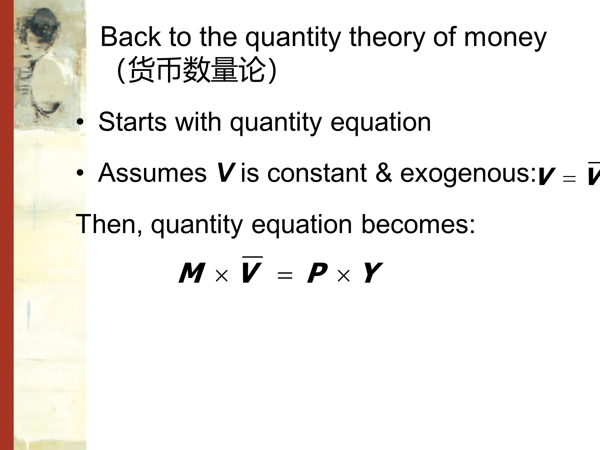
M × V̄ = P × Y
- 唯一的理论假设：V 是常数（V̄）。这一步把恒等式变成了理论。
- 于是方程只剩三个变量（M、P、Y）：给定 M 与 Y，就能解出 P。这就是 5-13 的逻辑顺序。
5-13The quantity theory of money (continued)（价格水平的决定）
| 原文 | 中文对照 |
|---|---|
| How the price level is determined: | 价格水平如何决定： |
| With V constant, the money supply determines nominal GDP (P × Y). | V 不变时，货币供给决定名义 GDP（P × Y）。 |
| Real GDP is determined by the economy's supplies of K and L and the production function (Chapter 3). | 实际 GDP 由经济的 K、L 供给与生产函数决定（第 3 章）。 |
| The price level is P = (nominal GDP)/(real GDP). | 价格水平 P =（名义 GDP）/（实际 GDP）。 |
教师备注（原文＋译文）12 段
教师备注（原文照录）
It's worthwhile to underscore the order (logical order, though not necessarily chronological order) in which variables are determined in this model (as well as the other models students will learn in this course).
First, real GDP is already determined outside this model (real GDP is determined by the model from Chapter 3, which was completely independent of the money supply or velocity or other nominal variables).
Second, the quantity theory of money determines nominal GDP.
Third, the values of nominal GDP (PY) and real GDP (Y) together determine P (as a ratio of PY to Y).
If, on an exam or homework problem, students forget the logical order in which endogenous variables are determined—or on a more fundamental level, forget which variables are endogenous and which are exogenous—then they are much less likely to earn the high grades that most of them desire.
[Note the similarity between the way P is determined and the definition of the GDP deflator from Chapter 2.]
教师备注（译文）
强调这个模型中各变量被决定的顺序（逻辑顺序，未必是时间顺序），这对学生在本课程将学的其他模型同样重要。
第一，实际 GDP 已在本模型之外决定（实际 GDP 由第 3 章的模型决定，那个模型完全独立于货币供给、流通速度或其他名义变量）。
第二，货币数量论决定名义 GDP。
第三，名义 GDP（PY）与实际 GDP（Y）共同决定 P（即 PY 与 Y 之比）。
如果学生在考试或作业中忘记内生变量被决定的逻辑顺序——或者更根本地，忘记哪些变量是内生、哪些是外生——那么他们得到高分（多数学生想要的）的可能性就小得多。
［注意 P 的决定方式与第 2 章 GDP 平减指数的定义之间的相似性。］
- 三步逻辑顺序必须背： 1. Y 由第 3 章决定（K̄、L̄、F，与货币无关） 2. PY 由 M×V̄ 决定（数量论） 3. P = PY / Y（两者相除）
- 这个顺序说明：货币不影响 Y，只影响 P——即货币中性（5-56）。
- 与第 2 章对照：P = NGDP/RGDP 正是 GDP 平减指数的定义（2-35）。
5-14The quantity theory of money (continued)（增长率形式）
| 原文 | 中文对照 |
|---|---|
| Recall from Chapter 2: The growth rate of a product equals the sum of the growth rates. | 回忆第 2 章：乘积的增长率等于各增长率之和。 |
| The quantity equation in growth rates: | 数量方程的增长率形式： |
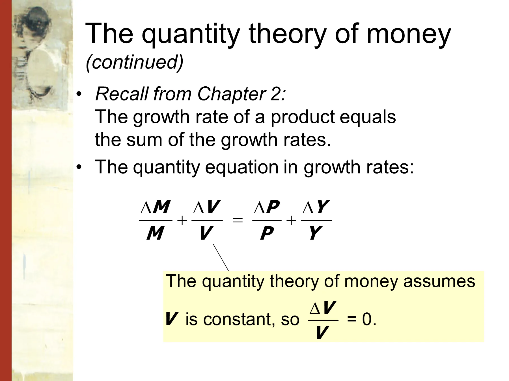
ΔM/M + ΔV/V = ΔP/P + ΔY/Y
The quantity theory of money assumes V is constant, so ΔV/V = 0.
货币增长率 + 流通速度增长率 = 通胀率 + 产出增长率
数量论假设 V 不变，所以 ΔV/V = 0。
- 用的是 2-40 的技巧 1（乘积的增长率 = 增长率之和）。
- 假设 ΔV/V = 0 后，方程简化为 ΔM/M = ΔP/P + ΔY/Y，即 5-15 的起点。
5-15The quantity theory of money (continued)（解出 π）
| 原文 | 中文对照 |
|---|---|
| π (Greek letter pi) denotes the inflation rate: | π（希腊字母 pi）表示通胀率： |
| The result from the preceding slide: | 上一页的结果： |
| Solve this result for π: | 从中解出 π： |
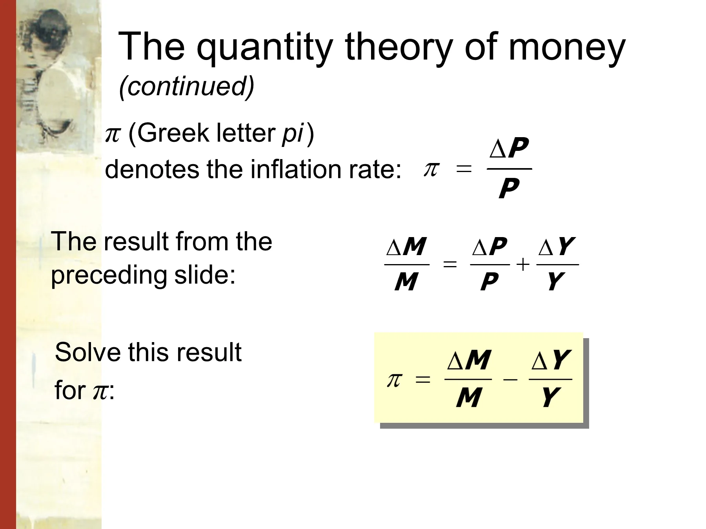
π = ΔP/P
π = ΔM/M − ΔY/Y
通胀率 π = ΔP/P
π = 货币增长率 − 产出增长率
- 这是本章的核心方程：通胀 = 货币增长 − 产出增长。
- 读法：货币增长超过产出增长的部分，全部转化为通胀；若二者相等，则物价稳定。
- 前提是 V 不变；若 V 变化，多出的部分也会进入通胀。
5-16The quantity theory of money (continued)（含义）
| 原文 | 中文对照 |
|---|---|
| Normal economic growth requires a certain amount of money supply growth to facilitate the growth in transactions. | 正常的经济增长需要一定量的货币供给增长来支持交易的增长。 |
| Money growth in excess of this amount leads to inflation. | 超过这一数量的货币增长会导致通胀。 |
教师备注（原文＋译文）8 段
教师备注（原文照录）
The text on this slide is an intuitive way to understand the equation.
For students that are more comfortable with concrete numerical examples, you could offer the following:
Suppose real GDP is growing by 3% per year over the long run. Thus, production, income, and spending are all growing by 3%. This means that the volume of transactions will be growing as well.
The central bank can achieve zero inflation (on average over the long run) simply by setting the growth rate of the money supply at 3%, in which case exactly enough new money is being supplied to facilitate the growth in transactions.
教师备注（译文）
这一页的文字是理解该方程的一种直观方式。
对更喜欢具体数值例子的学生，可以给出下面这个：
假设实际 GDP 长期每年增长 3%。于是生产、收入与支出都增长 3%。这意味着交易量也会增长。
央行只要把货币供给增长率设为 3%，就能实现零通胀（长期平均而言），此时新增货币恰好足够支持交易的增长。
- 政策含义（备注算例）：实际 GDP 增长 3% 时，货币增长 3% → 通胀 0%。这就是「货币增长的目标应等于产出增长」的规则。
- 反之，若 M 增长 5%、Y 增长 3%，则 π = 2%。
5-17The quantity theory of money (continued)（一一对应）
| 原文 | 中文对照 |
|---|---|
| ΔY/Y depends on growth in the factors of production and on technological progress (all of which we take as given, for now). | ΔY/Y 取决于生产要素的增长与技术进步（目前我们都视为给定）。 |
| Hence, the quantity theory predicts a one-for-one relation between changes in the money growth rate and changes in the inflation rate. | 因此，数量论预测货币增长率的变化与通胀率的变化之间存在一一对应关系。 |
教师备注（原文＋译文）2 段
教师备注（原文照录）
Note: The theory doesn't predict that the inflation rate will equal the money growth rate. It predicts that a change in the money growth rate will cause an equal change in the inflation rate.
教师备注（译文）
注：该理论并不预测通胀率等于货币增长率。它预测的是：货币增长率的变化会引起通胀率等量的变化。
- 这个区分极重要：水平不等，变化相等。例如 M 增长 7%、Y 增长 3% 时 π = 4%，此时 π ≠ 7%，但若 M 增速提高 1 个百分点，π 也提高 1 个百分点。
- 「one-for-one」= 一一对应 = 斜率 1。
5-18Confronting the quantity theory with data
| 原文 | 中文对照 |
|---|---|
| Confronting the quantity theory with data | 用数据检验数量论 |
| The quantity theory of money implies: | 货币数量论蕴含： |
| 1. Countries with higher money growth rates should have higher inflation rates. | 1. 货币增长率更高的国家应有更高的通胀率。 |
| 2. The long-run trend in a country's inflation rate should be similar to the long-run trend in the country's money growth rate. | 2. 一国通胀率的长期趋势应与其货币增长率的长期趋势相似。 |
| Are the data consistent with these implications? | 数据与这些含义一致吗？ |
- 两个可检验的推论：横截面（跨国比较，5-19）与时间序列（一国内部，5-20、5-21）。
- 这正是实证检验的标准设计：一个理论给出两个方向的预测，两个方向都要验证。
5-19International data on inflation and money growth
| 原文 | 中文对照 |
|---|---|
| International data on inflation and money growth | 通胀与货币增长的国际数据 |
| Inflation rate (percent) | 通胀率（%） |
| Money supply growth (percent) | 货币供给增长率（%） |
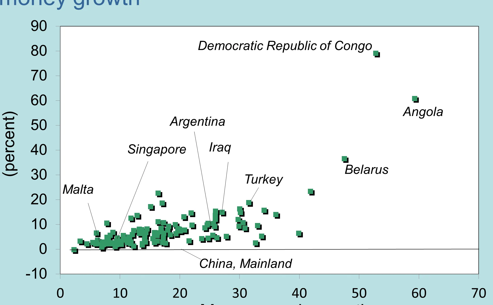
教师备注（原文＋译文）10 段
教师备注（原文照录）
Figure 5-2, p. 112
Each variable is measured as an annual average over the period 2000-2013.
The strong positive correlation is evidence for the quantity theory of money.
Source: Money Supply Data - www.imf.org > Data > International Financial Statistics (IFS)
Inflation Data - www.imf.org > Data > World Economic Outlook
教师备注（译文）
图 5-2，第 112 页。
每个变量都取 2000–2013 年期间的年平均值。
强烈的正相关是货币数量论的证据。
来源：货币供给数据——www.imf.org > Data > International Financial Statistics (IFS)
通胀数据——www.imf.org > Data > World Economic Outlook
- 图形：横轴货币增长率、纵轴通胀率，散点沿 45° 线分布，斜率约为 1。
- 数据范围：2000–2013 年年均值，各国差异极大（低通胀国家 1%–3%，高通胀国家 30%–60%）。
- 结论：跨国证据支持数量论——货币增长高的国家通胀也高。
5-20U.S. inflation and money growth, 1960-2014（第 1 帧）
| 原文 | 中文对照 |
|---|---|
| U.S. inflation and money growth, 1960-2014 | 美国通胀与货币增长，1960–2014 |
| M2 growth rate | M2 增长率 |
| inflation rate | 通胀率 |
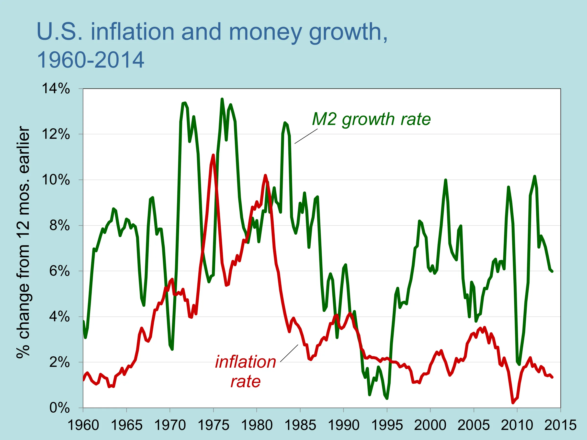
教师备注（原文＋译文）8 段
教师备注（原文照录）
Source: Federal Reserve Bank of St. Louis
http://research.stlouisfed.org/fred2/
M2SL (percent change from a year ago, quarterly aggregation method average)
GDPDEF (percent change from year ago)
教师备注（译文）
来源：圣路易斯联邦储备银行
http://research.stlouisfed.org/fred2/
M2SL（同比百分比变化，季度汇总法平均）
GDPDEF（同比百分比变化）
- 两条线：M2 增长率（波动大，长期约 7%–8%）与通胀率（较低但趋势相同）。
- 注意水平差异：M2 增长长期高于通胀约 4–5 个百分点，这正是实际产出增长的贡献（π = ΔM/M − ΔY/Y）。
- 序列代码：M2SL、GDPDEF。
5-21U.S. inflation and money growth, 1960-2014（第 2 帧）
| 原文 | 中文对照 |
|---|---|
| U.S. inflation and money growth, 1960-2014 | 美国通胀与货币增长，1960–2014 |
| Inflation and money growth have the same long-run trends, as the quantity theory predicts. | 通胀与货币增长具有相同的长期趋势，正如数量论所预测。 |
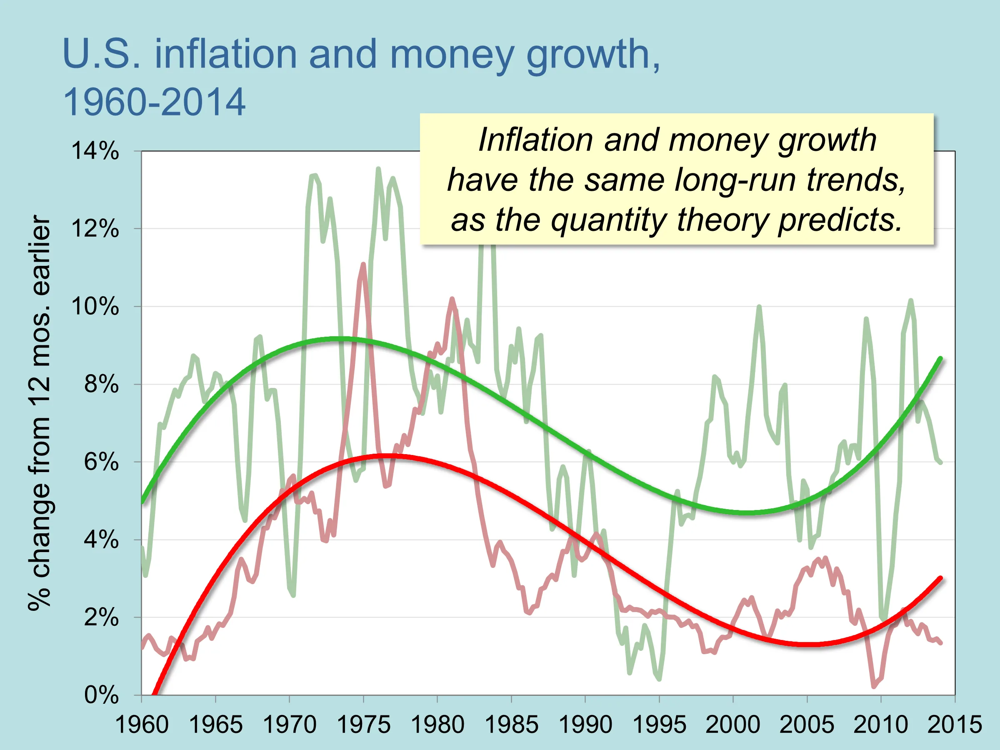
教师备注（原文＋译文）12 段
教师备注（原文照录）
The quantity theory of money is intended to explain the long-run relation of inflation and money growth, not the short-run relation. In the long run, inflation and money growth are positively related, as the theory predicts.
(In the short run, however, inflation and money growth appear highly negatively correlated! One possible reason is that the causality is reversed in the short run: When inflation rises—or is expected to rise—the Fed cuts back on money growth. If the economy slumps and inflation falls, the Fed increases money growth. It might be appropriate to discuss this when covering the chapters on short-run fluctuations.)
Source: Federal Reserve Bank of St. Louis
http://research.stlouisfed.org/fred2/
M2SL (percent change from year ago, quarterly aggregation method average)
GDPDEF (percent change from year ago)
教师备注（译文）
货币数量论意在解释通胀与货币增长的长期关系，而不是短期关系。长期中，通胀与货币增长正相关，正如理论所预测。
（然而短期内，通胀与货币增长似乎高度负相关！一个可能的原因是短期内因果方向相反：当通胀上升——或被预期将上升——美联储会削减货币增长。如果经济下滑、通胀下降，美联储就增加货币增长。讲短期波动各章时讨论这一点可能比较合适。）
来源：圣路易斯联邦储备银行
http://research.stlouisfed.org/fred2/
M2SL（同比百分比变化，季度汇总法平均）
GDPDEF（同比百分比变化）
- 关键区分：长期正相关、短期负相关。短期负相关的原因是反向因果——美联储对通胀做逆周期操作。
- 这条备注解释了为什么不能用短期数据否定数量论：理论本就只针对长期。
- 考试常考：「为什么短期内 M 增长与通胀可能负相关？」答案即货币政策的内生反应。
5-22Seigniorage（货币铸造税）
| 原文 | 中文对照 |
|---|---|
| Seigniorage（货币铸造税） | 铸币税 |
| To spend more without raising taxes or selling bonds, the govt can print money. | 要在不增税也不卖债券的情况下多支出，政府可以印钞。 |
| The "revenue" raised from printing money is called seigniorage. | 印钞所筹集的「收入」称为铸币税。 |
| The inflation tax: Printing money to raise revenue causes inflation. Inflation is like a tax on people who hold money. | 通胀税：为筹资而印钞会引起通胀。通胀就像对持有货币的人征税。 |
教师备注（原文＋译文）4 段
教师备注（原文照录）
In the U.S., seigniorage accounts for only about 3% of total government revenue. In Italy and Greece, seigniorage has often been more than 10% of total revenue. In countries experiencing hyperinflation, seigniorage is often the government's main source of revenue, and the need to print money to finance government expenditure is a primary cause of hyperinflation.
See Case Study on p. 113 "Paying for the American Revolution."
教师备注（译文）
在美国，铸币税只占政府总收入的约 3%。在意大利与希腊，铸币税常常超过总收入的 10%。在经历恶性通胀的国家，铸币税往往是政府的主要收入来源，而为政府支出融资的印钞需求是恶性通胀的主要原因。
见第 113 页案例研究「为美国独立战争付账」。
- 铸币税的三个量级（备注）：美国约 3%；意大利、希腊常超 10%；恶性通胀国家为主要收入来源。
- 「通胀税」的税基是持币余额：谁持有现金，谁就承担税负；税率就是通胀率。
- 这条把 5-15 的方程与财政联系起来：赤字 → 印钞 → 通胀 → 通胀税。
5-23Inflation and interest rates
| 原文 | 中文对照 |
|---|---|
| Inflation and interest rates | 通胀与利率 |
| Nominal interest rate, i not adjusted for inflation | 名义利率 i：未经通胀调整 |
| Real interest rate, r adjusted for inflation: r = i − π | 实际利率 r：经通胀调整：r = i − π |
教师备注（原文＋译文）2 段
教师备注（原文照录）
This slide will be very familiar to students who have recently taken an introductory course.
教师备注（译文）
对刚学过经济学原理的学生来说，这一页会非常熟悉。
- 定义式：r = i − π，即实际利率 = 名义利率 − 通胀率。
- 注意符号约定：i 是观察到的市场利率；r 是购买力的增长率；π 是已实现的通胀率。
5-24The Fisher effect（费雪效应）
| 原文 | 中文对照 |
|---|---|
| The Fisher effect（费雪效应） | 费雪效应 |
| The Fisher equation: i = r + π | 费雪方程：i = r + π |
| Chapter 3: S = I determines r. | 第 3 章：S = I 决定 r。 |
| Hence, an increase in π causes an equal increase in i. | 因此，π 的上升引起 i 的等量上升。 |
| This one-for-one relationship is called the Fisher effect. | 这种一一对应关系称为费雪效应。 |
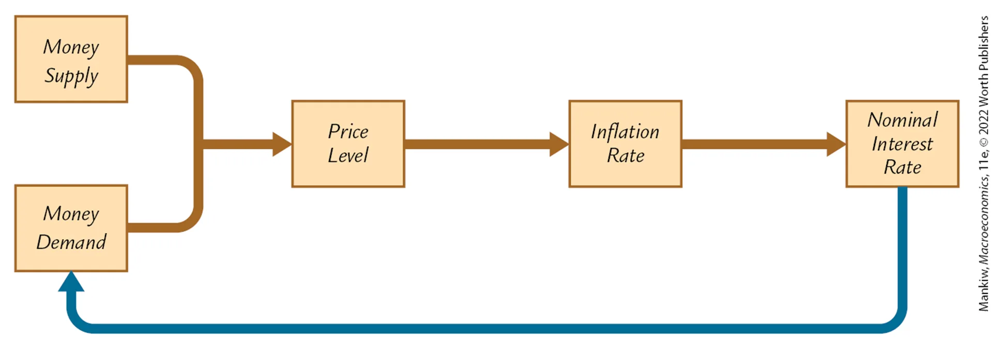
教师备注（原文＋译文）6 段
教师备注（原文照录）
Note that S and I are real variables. In Chapter 3, we learned about the factors that determine S and I. These factors did not include the money supply, velocity, inflation, or other nominal variables.
Hence, in the classical (long-run) theory covered here in Chapter 5, changes in money growth or inflation do not affect the real interest rate. This is why there's a one-for-one relationship between changes in the inflation rate and changes in the nominal interest rate.
(Again, the Fisher effect does not imply that the nominal interest rate equals the inflation rate. It implies that changes in the nominal interest rate equal changes in the inflation rate, given a constant value of the real interest rate.)
教师备注（译文）
注意 S 与 I 都是实际变量。第 3 章我们学过决定 S 与 I 的因素，这些因素不包括货币供给、流通速度、通胀或其他名义变量。
因此，在第 5 章所讲的古典（长期）理论中，货币增长或通胀的变化不影响实际利率。这就是为什么通胀率的变化与名义利率的变化之间存在一一对应关系。
（再次强调，费雪效应并不意味着名义利率等于通胀率。它意味着：在实际利率不变的前提下，名义利率的变化量等于通胀率的变化量。）
- 推理链：r 由第 3 章的 S = I 决定（实际因素）→ r 不受 π 影响 → i = r + π 中 i 与 π 同幅变动。
- 图 5-24 展示完整传导：货币供求 → 价格水平 → 通胀率 → 名义利率，并有一条从名义利率回到货币需求的反馈（因为 i 是持币的机会成本）。
- 与 5-17 对照：数量论说「ΔM 一一对应 Δπ」，费雪效应说「Δπ 一一对应 Δi」，两者串起来就是「ΔM 一一对应 Δi」。
5-25U.S. inflation and nominal interest rates, 1955-2020
| 原文 | 中文对照 |
|---|---|
| U.S. inflation and nominal interest rates, 1955-2020 | 美国通胀与名义利率，1955–2020 |
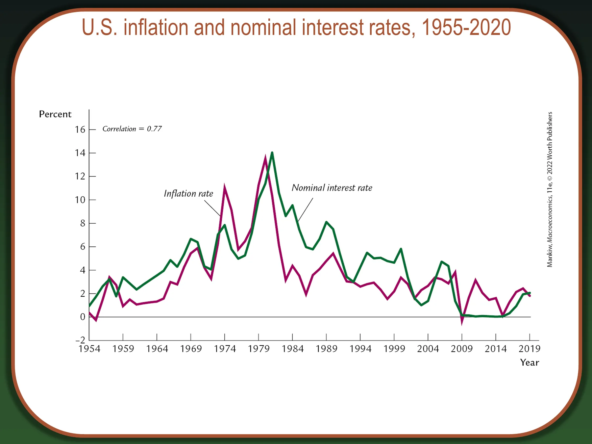
教师备注（原文＋译文）18 段
教师备注（原文照录）
The data are consistent with the Fisher effect: inflation and the nominal interest rate are very highly correlated.
Notice: The current nominal interest rate is near zero while, inflation is positive. Ask students what this implies about the real cost of government borrowing.
That they are not perfectly correlated does not contradict the Fisher effect. Over time, the saving and investment curves (see Chapter 3) move around, changing the real interest rate, which, in turn, causes the nominal interest rate to change for a given value of inflation.
Notice that the measure of inflation here is CPI.
About the data:
The inflation rate is the percentage change in the CPI from 12 months earlier.
(CPIAUCSL, monthly percentage change from a year ago)
The nominal interest rate is the 3-month treasury bill rate in the secondary market (TB3MS, monthly)
Data obtained from http://research.stlouisfed.org/fred2/
教师备注（译文）
数据与费雪效应一致：通胀与名义利率高度相关。
注意：当前名义利率接近零，而通胀为正。问学生这对政府借款的实际成本意味着什么。
两者并非完全相关，这并不与费雪效应矛盾。随着时间推移，储蓄与投资曲线（见第 3 章）会移动，改变实际利率，从而在给定通胀水平下引起名义利率变化。
注意这里的通胀指标是 CPI。
关于数据：
通胀率是 CPI 相对 12 个月前的百分比变化。
（CPIAUCSL，月度同比百分比变化）
名义利率是二级市场上的 3 个月期国库券利率（TB3MS，月度）
数据取自 http://research.stlouisfed.org/fred2/
- 两条线高度同步：1970 年代末通胀与名义利率同时冲高（利率超过 10%），1980 年代后同步回落。
- 不完全重合的原因（备注）：r 本身在变（S、I 曲线移动），所以 i 与 π 的差距不固定。
- 序列：CPIAUCSL（CPI）、TB3MS（3 个月国库券利率）。
5-26Inflation and nominal interest rates in 48 countries
| 原文 | 中文对照 |
|---|---|
| Inflation and nominal interest rates in 48 countries | 48 个国家的通胀与名义利率 |
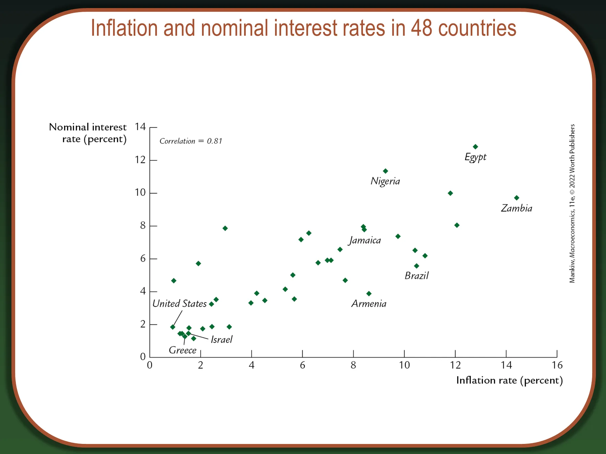
教师备注（原文＋译文）8 段
教师备注（原文照录）
Sources: Interest Rate Data - www.imf.org > Data > International Financial Statistics (IFS)
Inflation Data - www.imf.org > Data > World Economic Outlook
Each variable is measured as an annual average over 2000–2013.
The nominal interest rate is the rate on short-term government debt.
教师备注（译文）
来源：利率数据——www.imf.org > Data > International Financial Statistics (IFS)
通胀数据——www.imf.org > Data > World Economic Outlook
每个变量取 2000–2013 年的年平均值。
名义利率为短期政府债务的利率。
- 散点沿 45° 线分布，斜率约 1，是费雪效应的跨国证据（与 5-19 的数量论证据同构）。
- 样本：48 国、2000–2013 年均值，通胀跨度从 1% 到 60% 以上。
5-27NOW YOU TRY: Applying the theory
| 原文 | 中文对照 |
|---|---|
| NOW YOU TRY: Applying the theory | 现在你来试：应用理论 |
| Suppose V is constant, M is growing 5% per year, Y is growing 2% per year, and r = 4. | 假设 V 不变，M 每年增长 5%，Y 每年增长 2%，r = 4。 |
| a. Solve for i. | a. 求 i。 |
| b. If the Fed increases the money growth rate by 2 percentage points per year, find Δi. | b. 如果美联储把货币增长率提高 2 个百分点/年，求 Δi。 |
| c. Suppose the growth rate of Y falls to 1% per year. | c. 假设 Y 的增长率降到 1%/年。 |
| What will happen to π? | π 会怎样？ |
| What must the Fed do if it wishes to keep π constant? | 如果美联储想保持 π 不变，必须怎么做？ |
教师备注（原文＋译文）2 段
教师备注（原文照录）
This exercise gives students an immediate application of the quantity theory of money and the Fisher effect. The math is not difficult.
教师备注（译文）
这个练习让学生立即应用货币数量论与费雪效应。数学并不难。
- 解题顺序：先 π = ΔM/M − ΔY/Y，再 i = r + π。答案见 5-28。
- 已知量：ΔM/M = 5%，ΔY/Y = 2%，r = 4。
5-28ANSWERS: Applying the theory
| 原文 | 中文对照 |
|---|---|
| ANSWERS: Applying the theory | 答案：应用理论 |
| V is constant, M grows 5% per year, Y grows 2% per year, r = 4. | V 不变，M 每年增长 5%，Y 每年增长 2%，r = 4。 |
| a. First, find π = 5 − 2 = 3. | a. 先求 π = 5 − 2 = 3。 |
| Then, find i = r + π = 4 + 3 = 7. | 再求 i = r + π = 4 + 3 = 7。 |
| b. Δi = 2, same as the increase in the money growth rate. | b. Δi = 2，与货币增长率的提高幅度相同。 |
| c. If the Fed does nothing, Δπ = 1. | c. 如果美联储不采取行动，Δπ = 1。 |
| To prevent inflation from rising, the Fed must reduce the money growth rate by 1 percentage point per year. | 为防止通胀上升，美联储必须把货币增长率降低 1 个百分点/年。 |
- 三个答案：i = 7；Δi = 2；若 Y 增速降 1 个百分点则 π 升 1 个百分点，需把 ΔM/M 降 1 个百分点。
- c 问的逻辑：Y 增速从 2% 降到 1%，若 M 增速不变，π 从 3% 升到 4%（+1）。要维持 π = 3%，必须把 M 增速从 5% 降到 4%。
5-29Two real interest rates
| 原文 | 中文对照 |
|---|---|
| Two real interest rates | 两个实际利率 |
| π = actual inflation rate (not known until after it has occurred) | π = 实际通胀率（发生之后才知道） |
| Eπ = expected inflation rate | Eπ = 预期通胀率 |
| Two real interest rates: | 两个实际利率： |
| i – Eπ = ex ante（事前）real interest rate: the real interest rate people expect at the time they buy a bond or take out a loan | i − Eπ = 事前实际利率：人们购买债券或申请贷款时预期的实际利率 |
| i – π = ex post（事后）real interest rate: the real interest rate actually realized | i − π = 事后实际利率：实际实现的利率 |
- 两个概念的差别只在用预期还是用实际通胀： | 概念 | 公式 | 用途 | |---|---|---| | 事前（ex ante） | i − Eπ | 签约决策依据 | | 事后（ex post） | i − π | 实际盈亏结果 |
- 借贷双方按事前利率签约，但承受的是事后结果——这个差额就是 5-48 的「任意再分配」来源。
5-30Money demand and the nominal interest rate
| 原文 | 中文对照 |
|---|---|
| Money demand and the nominal interest rate | 货币需求与名义利率 |
| In the quantity theory of money, the demand for real money balances depends only on real income Y. | 在货币数量论中，实际货币余额需求只取决于实际收入 Y。 |
| Another determinant of money demand: the nominal interest rate, i. | 货币需求的另一个决定因素：名义利率 i。 |
| the opportunity cost of holding money (instead of bonds or other interest-earning assets). | 持有货币（而不是债券或其他生息资产）的机会成本。 |
| So, money demand depends negatively on i. | 所以，货币需求与 i 负相关。 |
教师备注（原文＋译文）10 段
教师备注（原文照录）
The concept of "money demand" can be a bit awkward for students the first time they learn it. Here's a good way to explain it:
A consumer has a certain amount of wealth, which he/she must divide between money and other assets.
Money is nice because it's very liquid. But money doesn't pay interest (loosely speaking—more precisely, the nominal interest rate on money is zero, while the real rate equals minus the inflation rate).
The other assets are typically less liquid than money, but they typically generate some type of income (e.g., interest income in the case of bonds).
Therefore, there's a tradeoff between liquidity and income: The more money the consumer holds in his/her portfolio, the greater the liquidity of his/her wealth, but the less income he/she earns from it.
教师备注（译文）
「货币需求」这个概念学生第一次接触时可能有点别扭。这里有一个好的解释方式：
消费者拥有一定量的财富，必须在货币与其他资产之间分配。
货币的好处是流动性很强。但货币不付利息（粗略地说——更准确地说，货币的名义利率为零，实际利率等于负的通胀率）。
其他资产通常流动性不如货币，但通常能产生某种收入（例如债券的利息收入）。
因此，在流动性与收入之间存在权衡：消费者持有货币越多，其财富的流动性越高，但从中获得的收入越少。
- 核心权衡：流动性 vs 收益。持币方便但不生息；持债生息但不便交易。
- i 上升 = 持币的机会成本上升 → 货币需求下降。这是对 5-10「只取决于 Y」的修正。
- 备注还点出一个精确说法：货币的名义利率为零，实际利率 = −π。
5-31The money demand function
| 原文 | 中文对照 |
|---|---|
| The money demand function | 货币需求函数 |
| (M/P)d = real money demand, depends | (M/P)^d = 实际货币需求，取决于 |
| negatively on i | 与 i 负相关 |
| i is the opp. cost of holding money | i 是持有货币的机会成本 |
| positively on Y | 与 Y 正相关 |
| higher Y increases spending on g&s, so increases need for money | Y 越高，商品与服务支出越多，因而对货币的需要越多 |
| ("L" is used for the money demand function because money is the most liquid asset.) | （用「L」表示货币需求函数，因为货币是流动性最强的资产。） |
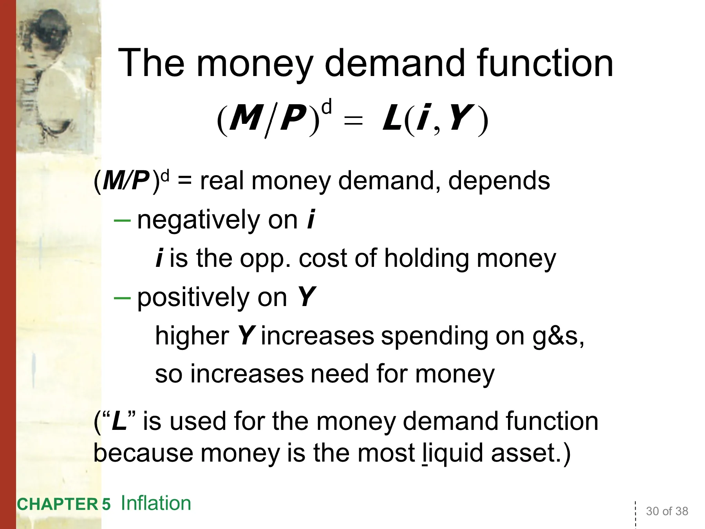
(M/P)^d = L(i, Y)
教师备注（原文＋译文）4 段
教师备注（原文照录）
An increase in the nominal interest rate represents the increase in the opportunity cost of holding money rather than bonds, and would motivate the typical consumer to hold less of his/her wealth in the form of money, and more in the form of bonds (or other interest-earning assets).
An increase in real income (other things equal) causes an increase in the consumer's consumption and therefore spending. To facilitate this extra spending, the consumer will require more money. Thus, the consumer would like a larger fraction of his wealth to be in the form of money (rather than bonds, etc.). This might involve redeeming/selling some of his/her bonds. Or it might simply involve holding the additional income in the form of money rather than putting it into bonds.
教师备注（译文）
名义利率上升意味着持有货币而不是债券的机会成本上升，会促使典型消费者以货币形式持有的财富减少、以债券（或其他生息资产）形式持有的财富增加。
实际收入上升（其他条件不变）会使消费者的消费从而支出增加。为支持这些额外支出，消费者需要更多货币。因此，消费者希望财富中更大比例以货币（而非债券等）形式持有。这可能涉及赎回/卖出部分债券，也可能只是把额外收入以货币形式持有而不投入债券。
- 函数形式：L(i, Y)，对 i 递减、对 Y 递增。
- 与数量论的差别：数量论里 (M/P)^d = kY（只含 Y）；这里多了一个 i。
- 「L」的来源：Liquidity（流动性），备注明确说明。
5-32The money demand function（用哪个 i）
| 原文 | 中文对照 |
|---|---|
| When people are deciding whether to hold money or bonds, they don't know what inflation will turn out to be. | 当人们决定持有货币还是债券时，他们并不知道通胀最终会是多少。 |
| Hence, the nominal interest rate relevant for money demand is r + Eπ. | 因此，与货币需求相关的名义利率是 r + Eπ。 |
- 关键替换：i → r + Eπ（费雪方程的事前版本）。
- 理由：持币决策是事前做出的，所以用的是预期通胀，而不是已实现的 π。
- 这一步使模型能够分析「预期通胀影响当前物价」（5-36、5-37）。
5-33Equilibrium
| 原文 | 中文对照 |
|---|---|
| Equilibrium | 均衡 |
| The supply of real money balances | 实际货币余额的供给 |
| Real money demand | 实际货币需求 |
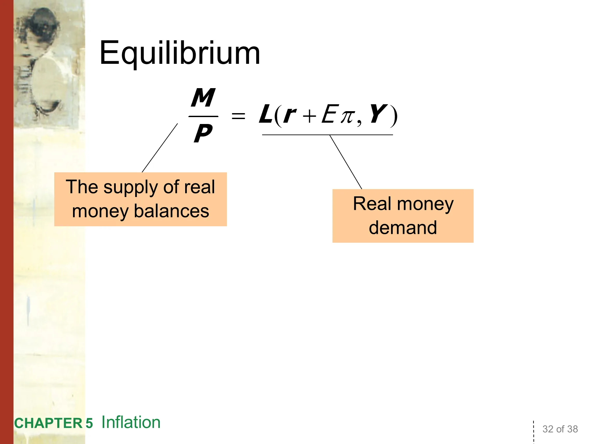
M/P = L(r + Eπ, Y)
左边 M/P = 实际货币余额的供给（由央行给定的 M 与价格 P 决定）
右边 L(r + Eπ, Y) = 实际货币需求
- 均衡条件把供给侧（M/P）与需求侧（L）连起来，是本章后半的核心方程。
- 注意：P 出现在左边，所以这个方程可以用来「解出 P」——这正是 5-34、5-35 的做法。
5-34What determines what?
| 原文 | 中文对照 |
|---|---|
| What determines what? | 什么决定什么？ |
| variable how determined (in the long run) | 变量 如何决定（长期） |
| variable | how determined (in the long run) |
|---|---|
| M | exogenous (the Fed) |
| r | adjusts to ensure S = I |
| Y | Ȳ = F(K̄, L̄) |
| P | adjusts to ensure M/P = L(i, Y) |
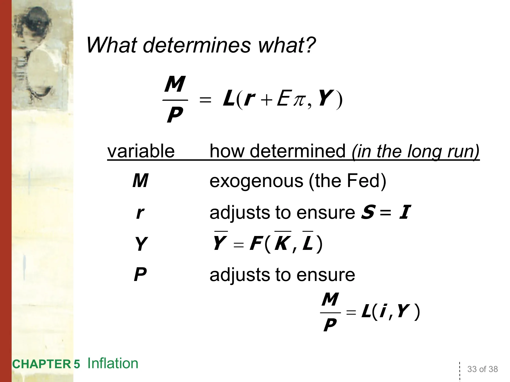
| 变量 | 长期如何决定 |
|---|---|
| M | 外生（美联储） |
| r | 调整以保证 S = I |
| Y | Ȳ = F(K̄, L̄) |
| P | 调整以保证 M/P = L(i, Y) |
教师备注（原文＋译文）2 段
教师备注（原文照录）
Again, it is very important for students to learn the logical order in which variables are determined. For example, we do not need to know P in order to determine Y. We do need to know Y in order to determine L, and we need to know L and M in order to determine P.
教师备注（译文）
再次强调，学生学习变量被决定的逻辑顺序非常重要。例如，我们不需要知道 P 就能决定 Y。我们确实需要知道 Y 才能决定 L，而需要知道 L 与 M 才能决定 P。
- 四行构成一条单向决定链：M（外生）→ r（由 S=I）→ Y（由 F）→ P（由货币市场均衡）。
- 关键洞察（备注）：P 是最后被决定的、也是唯一「被动调整」的名义变量。所以「货币影响物价」在逻辑上是 P 去适应 M，而不是反过来。
5-35How P responds to ΔM
| 原文 | 中文对照 |
|---|---|
| How P responds to ΔM | P 如何对 ΔM 作出反应 |
| For given values of r, Y, and Eπ, | 给定 r、Y 与 Eπ， |
| a change in M causes P to change by the same percentage—just like in the quantity theory of money. | M 的变化使 P 按同一百分比变化——正如货币数量论所述。 |
| Yet in real life, changes in M can change Eπ. Therefore, the effect of money on prices is more complicated than the simply Quantity Theory of Money suggests. | 但在现实中，M 的变化会改变 Eπ。因此，货币对物价的影响比简单数量论所暗示的更复杂。 |
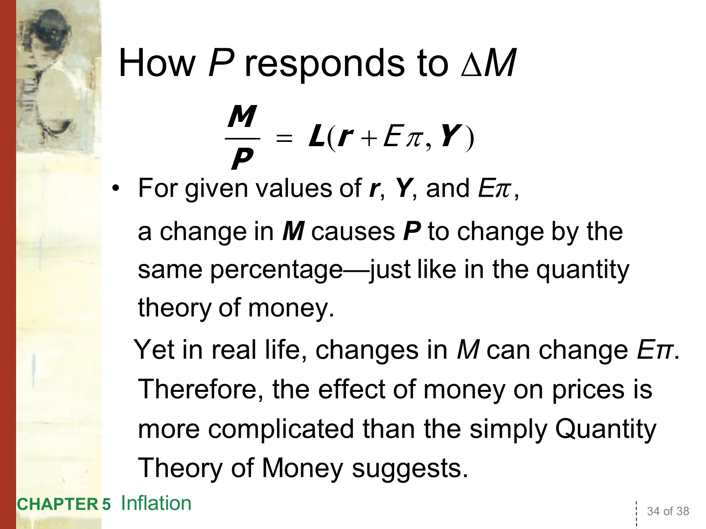
M/P = L(r + Eπ, Y)
教师备注（原文＋译文）2 段
教师备注（原文照录）
This slide shows the connection between the money market equilibrium condition and the (simpler) quantity theory of money, presented earlier in this chapter.
教师备注（译文）
这一页展示了货币市场均衡条件与本章前面讲的（更简单的）货币数量论之间的联系。
- 数学：固定 r、Y、Eπ 时，L 固定，所以 M/P 必须固定 → M 与 P 同比例变动。这与数量论结论一致。
- 但现实中 ΔM 会改变 Eπ（人们看到货币扩张就预期通胀），于是 L 也变，P 的调整幅度不再等于 M 的变动幅度。
- 这一页是「简单数量论」与「完整货币市场模型」的桥梁。
5-36What about expected inflation?
| 原文 | 中文对照 |
|---|---|
| What about expected inflation? | 预期通胀又如何？ |
| Over the long run, people don't consistently over- or under-forecast inflation, so Eπ = π on average. | 长期中，人们不会系统性地高估或低估通胀，所以平均而言 Eπ = π。 |
| In the short run, Eπ may change when people get new information. | 短期内，当人们获得新信息时 Eπ 可能变化。 |
| E.g.: The Fed announces it will increase M next year. People will expect next year's P to be higher, so Eπ rises. | 例：美联储宣布明年将增加 M。人们会预期明年的 P 更高，于是 Eπ 上升。 |
| This affects P now, even though M hasn't changed yet... | 这会影响现在的 P，即使 M 尚未变化…… |
教师备注（原文＋译文）2 段
教师备注（原文照录）
This slide and the next correspond to the subsection of Chapter 5 entitled "Future Money and Current Prices" on pp. 119-120.
教师备注（译文）
这一页与下一页对应第 5 章「未来的货币与当前物价」小节，第 119–120 页。
- 长期：Eπ = π（预期无系统性偏误），所以长期可以用 π 代替 Eπ。
- 短期：预期可以领先于现实——宣布未来增发货币，今天的物价就动。这是「预期管理」有效的理论依据。
5-37How P responds to ΔEπ
| 原文 | 中文对照 |
|---|---|
| How P responds to ΔEπ | P 如何对 ΔEπ 作出反应 |
| For given values of r, Y, and M, | 给定 r、Y 与 M， |
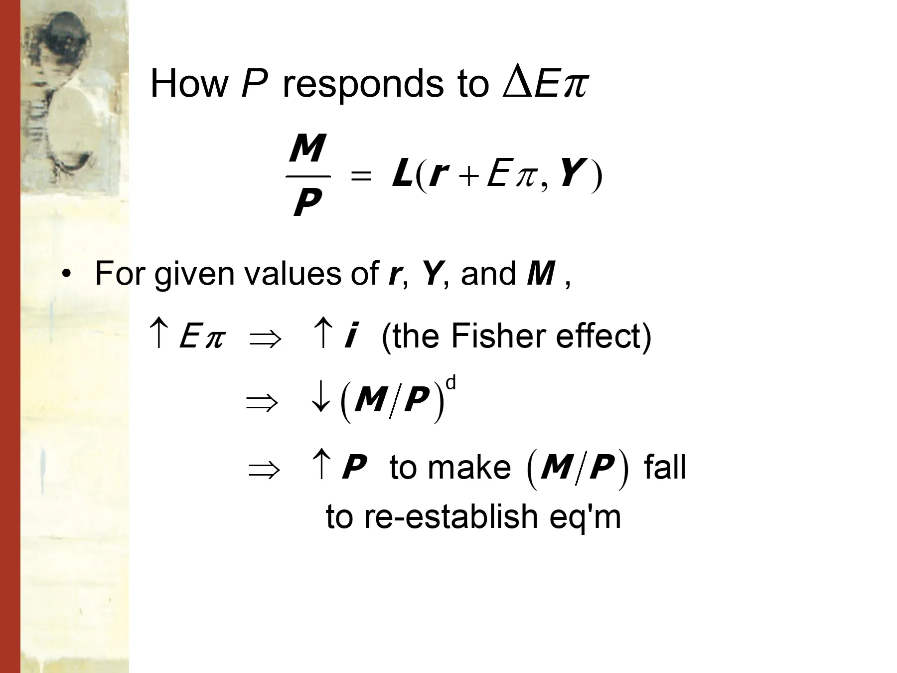
传导链（照录）
↑Eπ ⇒ ↑i（费雪效应）⇒ ↓(M/P)^d ⇒ ↑P，以使 (M/P) 下降、重新恢复均衡
- 三步链条必须能默写：预期通胀上升 → 名义利率上升 → 实际货币需求下降 → 给定 M 时 P 必须上升（因为 M/P 要下降）。
- 结论：预期通胀本身就会推高当前物价，即使货币尚未增发。这是「通胀预期自我实现」的机制。
- 与 5-36 的例子配合：美联储宣布明年增发 → 今天 Eπ↑ → 今天 P↑。
5-38NOW YOU TRY: Discussion Question
| 原文 | 中文对照 |
|---|---|
| NOW YOU TRY: Discussion Question | 现在你来试：讨论题 |
| Why is inflation bad? | 通胀为什么不好？ |
| What costs does inflation impose on society? List all the ones you can think of. | 通胀给社会带来什么成本？尽可能列出你能想到的所有成本。 |
| Focus on the long run. | 聚焦长期。 |
| Think like an economist. | 像经济学家那样思考。 |
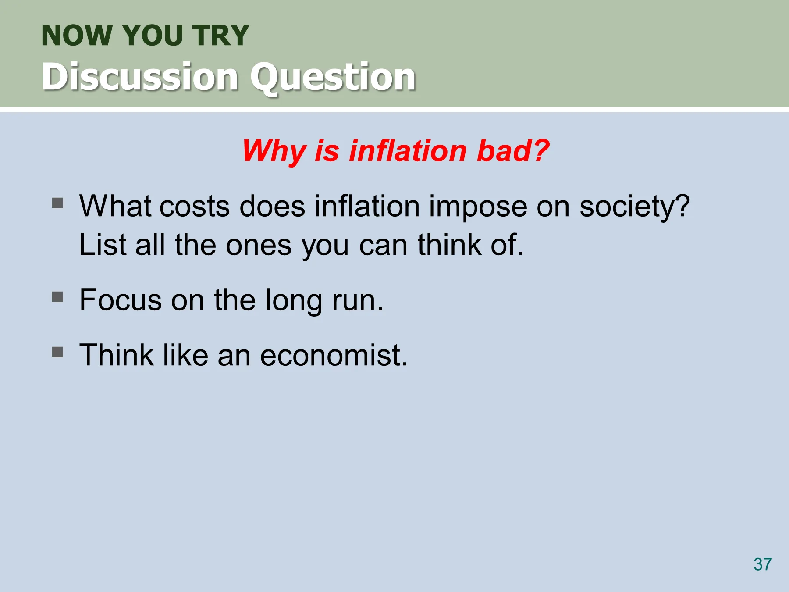
教师备注（原文＋译文）6 段
教师备注（原文照录）
Many of the social costs of inflation are not hard to figure out, if students "think like an economist."
Suggestion: After you pose the question, don't immediately ask for students to volunteer their answers. Instead, tell them to think about the question for a moment, jot down their answers, and THEN ask for volunteers. You will get more participation (quantity & quality) this way, especially from students who don't consider themselves fast thinkers.
After presenting the following slides (which describe the costs), see how many of the costs presented here were anticipated by the students' responses to the questions on this slide.
教师备注（译文）
如果学生「像经济学家那样思考」，通胀的许多社会成本并不难想出来。
建议：提出这个问题后，不要立刻请学生举手回答。而是让他们先想一会儿、把答案写下来，然后再请人回答。这样参与的人数与质量都会更高，尤其是对那些不认为自己反应快的学生。
讲完后面几页（描述各项成本）之后，可以看看学生在本页的回答中预见到了多少项成本。
- 这是 5-42 ~ 5-50 的引子：先让学生自己想，再对照讲义的五项成本 + 两项附加成本。
- 「聚焦长期」的限定很重要：短期通胀可能有刺激产出的作用，长期没有（货币中性）。
5-39A common misperception
| 原文 | 中文对照 |
|---|---|
| A common misperception | 一个常见误解 |
| Common misperception: inflation reduces real wages | 常见误解：通胀降低实际工资 |
| This is true only in the short run, when nominal wages are fixed by contracts. | 这仅在短期成立，即名义工资被合同固定时。 |
| (Chapter 3) In the long run, the real wage is determined by labor supply and the marginal product of labor, not the price level or inflation rate. | （第 3 章）长期中，实际工资由劳动供给与劳动的边际产品决定，而不是由价格水平或通胀率决定。 |
| Consider the data . . . | 看数据…… |
教师备注（原文＋译文）2 段
教师备注（原文照录）
Encourage your students to check out the case study "What economists and the public say about inflation" on p. 121.
教师备注（译文）
鼓励学生看第 121 页的案例研究「经济学家与公众如何看待通胀」。
- 误解的来源：把短期（名义工资黏性）当成了长期。
- 长期逻辑（第 3 章）：W/P 由 MPL 与劳动供给决定，是实际变量，与 P 无关（古典二分法，5-55）。
- 这一页是 5-40 数据的理论铺垫：如果误解成立，实际工资应随 CPI 上升而下降；数据显示并非如此。
5-40The CPI and average hourly earnings, 1965–2015
| 原文 | 中文对照 |
|---|---|
| The CPI and average hourly earnings, 1965–2015 | CPI 与平均小时工资，1965–2015 |
| Real average hourly earnings in 2014 dollars, right scale | 以 2014 年美元计的实际平均小时工资（右轴） |
| 1965 = 100 | 1965 = 100 |
| Hourly wage in 2014 dollars | 以 2014 年美元计的小时工资 |
| Nominal average hourly earnings, (1965 = 100) | 名义平均小时工资（1965 = 100） |
| CPI (1965 = 100) | CPI（1965 = 100） |
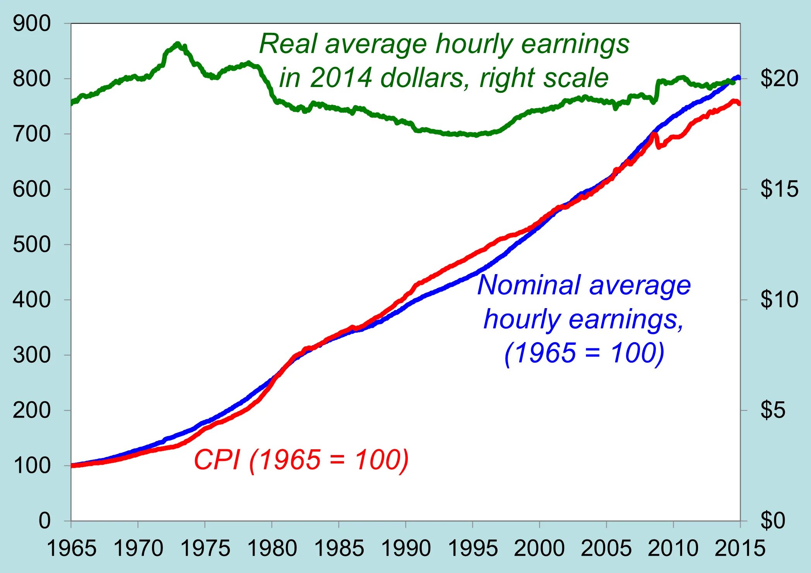
教师备注（原文＋译文）14 段
教师备注（原文照录）
The CPI has risen tremendously over the past 45 years. However, nominal wages have risen by a roughly similar magnitude.
If the common misperception were true, then the real wage should show exactly the opposite behavior as the CPI. It doesn't. While the real wage is not constant, it exhibits no downward long-term trend.
(We wouldn't expect the real wage to be constant over the long run – we would expect it to change in response to shifts in the labor supply and MPL curves.)
source: BLS
Obtained from: http://research.stlouisfed.org/fred2/
AHETPI = average hourly earnings: total private industries monthly
CPIAUCSL = CPI, all urban consumers, seasonally adjusted
教师备注（译文）
过去 45 年 CPI 大幅上升。然而名义工资的上升幅度也大致相当。
如果那个常见误解成立，实际工资应当表现出与 CPI 完全相反的走势。事实并非如此。实际工资虽不恒定，但没有长期下行趋势。
（我们本来也不应期望实际工资长期恒定——它会随劳动供给与 MPL 曲线的移动而变化。）
来源：BLS
取自：http://research.stlouisfed.org/fred2/
AHETPI = 平均小时工资：全部私营行业，月度
CPIAUCSL = CPI，全部城市消费者，季调
- 三条线：CPI（1965=100）、名义小时工资（1965=100）、实际小时工资（2014 美元，右轴）。
- 关键读数：CPI 与名义工资都从 100 涨到约 1,000（十倍），实际工资从约 18.9 涨到约 19.5 美元——基本持平、略有上升。
- 结论：通胀没有系统性侵蚀实际工资，误解不成立（实际工资的变动来自 MPL 与劳动供给，不是物价）。
5-41The classical view of inflation
| 原文 | 中文对照 |
|---|---|
| The classical view of inflation | 通胀的古典观点 |
| The classical view: A change in the price level is merely a change in the units of measurement. | 古典观点：价格水平的变化只不过是计量单位的改变。 |
| Then, why is inflation a social problem? | 那么，通胀为什么是社会问题？ |
- 类比：物价翻倍就像把「米」改成「厘米」——数字变了，实质没变。这是货币中性的通俗表述。
- 但通胀确实有成本（5-42 起），原因不是「价格变了」，而是价格变化过程中的摩擦与再分配。这一页是转折点。
5-42The social costs of inflation
| 原文 | 中文对照 |
|---|---|
| The social costs of inflation | 通胀的社会成本 |
| …fall into two categories: | ……分为两类： |
| 1. costs when inflation is expected | 1. 通胀被预期到时的成本 |
| 2. costs when inflation is different than people had expected | 2. 通胀与人们预期不同时的成本 |
- 分类框架必须记牢，后面 8 页都挂在这个框架下：
| 类别 | 页码 | 成本 |
|---|---|---|
| 预期到的通胀 | 5-43 ~ 5-47 | 鞋底成本、菜单成本、相对价格扭曲、税收不公、一般不便 |
| 未预期到的通胀 | 5-48 ~ 5-49 | 购买力的任意再分配、不确定性上升 |
| 好处 | 5-50 | 使实际工资得以下降而不需名义降薪 |
- 这个二分法的意义：即使完全预期到，通胀也有成本（前五项）；而未预期会额外增加再分配成本。
5-43The costs of expected inflation: 1. Shoeleather Cost（鞋底成本）
| 原文 | 中文对照 |
|---|---|
| The costs of expected inflation: 1. Shoeleather Cost（鞋底成本） | 预期通胀的成本：1. 鞋底成本 |
| Definition: the costs and inconveniences of reducing money balances to avoid the inflation tax. | 定义：为逃避通胀税而减少货币余额所带来的成本与不便。 |
| If π increases, i increases (why?), so people reduce their real money balances. | 若 π 上升，i 也上升（为什么？），于是人们减少实际货币余额。 |
| Remember: In long run, inflation does not affect real income or real spending. | 记住：长期中，通胀不影响实际收入或实际支出。 |
| So, same monthly spending but lower average money holdings means more frequent trips to the bank to withdraw smaller amounts of cash. | 所以，每月支出不变但平均持币更少，意味着更频繁地跑银行、每次取更少的现金。 |
教师备注（原文＋译文）4 段
教师备注（原文照录）
In the second bullet, the answer to the parenthetical "why?" is the Fisher effect.
Thanks to ATMs and internet banking, the shoeleather cost is likely to be very small.
教师备注（译文）
第二个要点中括号里「为什么？」的答案是费雪效应。
由于自动取款机与网上银行，鞋底成本可能非常小。
- 名称来源：跑银行太多会把鞋底磨破——形象化说法。
- 机制链：π↑ → i↑（费雪效应）→ 持币机会成本↑ → 实际货币余额↓ → 取款次数↑。
- 备注的现代修正：ATM 与网银使这项成本大幅下降，所以在当代美国几乎可忽略。
5-44The costs of expected inflation: 2. Menu Costs（菜单成本）
| 原文 | 中文对照 |
|---|---|
| The costs of expected inflation: 2. Menu Costs（菜单成本） | 预期通胀的成本：2. 菜单成本 |
| Definition: The costs of changing prices. | 定义：改变价格的成本。 |
| Examples: | 例： |
| cost of printing new menus | 印制新菜单的成本 |
| cost of printing & mailing new catalogs | 印制并邮寄新目录的成本 |
| The higher is inflation, the more frequently firms must change their prices and incur these costs. | 通胀越高，企业必须越频繁地改价，从而承担越多这类成本。 |
- 定义要点：成本不在「价格高低」，而在「改价这个动作」——印菜单、印目录、更新系统、通知客户。
- 与通胀率成正比：通胀越高 → 改价越频繁 → 菜单成本越大。
- 菜单成本是 5-45（相对价格扭曲）的前提：正因为改价有成本，企业才不连续调价。
5-45The costs of expected inflation: 3. Relative Price Distortions
| 原文 | 中文对照 |
|---|---|
| The costs of expected inflation: 3. Relative Price Distortions | 预期通胀的成本：3. 相对价格扭曲 |
| Firms facing menu costs change prices infrequently. | 面临菜单成本的企业不常改价。 |
| Example: A firm issues new catalog each January. As the general price level rises throughout the year, the firm's relative price will fall. | 例：某企业每年 1 月发布新目录。随着年内总体价格水平上升，该企业的相对价格会下降。 |
| Different firms change their prices at different times, leading to relative price distortions . . . | 不同企业在不同时间改价，导致相对价格扭曲…… |
| . . . causing microeconomic inefficiencies in the allocation of resources. | ……造成资源配置上的微观无效率。 |
- 关键概念：相对价格（某商品价格 ÷ 总体价格水平）。通胀本身不改变相对价格，但不同步的调价会改变它。
- 例子拆解：1 月定价、全年不调的企業，其相对价格在 12 月已比 1 月低——不是因为它的产品变了，而是因为别人涨价了。
- 效率损失：相对价格是资源配置的信号，信号失真 → 消费者误判、资源错配。
5-46The costs of expected inflation: 4. Unfair Tax Treatment
| 原文 | 中文对照 |
|---|---|
| The costs of expected inflation: 4. Unfair Tax Treatment | 预期通胀的成本：4. 税收不公 |
| Some taxes are not adjusted to account for inflation, such as the capital gains tax. | 有些税没有做通胀调整，例如资本利得税。 |
| Example: | 例： |
| Jan 1: you buy $10,000 worth of Apple stock | 1 月 1 日：你买入价值 10,000 美元的苹果股票 |
| Dec 31: you sell the stock for $11,000, so your nominal capital gain is $1,000 (10%). | 12 月 31 日：你以 11,000 美元卖出，名义资本利得为 1,000 美元（10%）。 |
| Suppose π = 10% during the year. Your real capital gain is $0. | 假设当年 π = 10%。你的实际资本利得为 0。 |
| Yet, you must pay taxes on your $1,000 nominal gain! | 但你仍要为 1,000 美元的名义利得缴税！ |
教师备注（原文＋译文）4 段
教师备注（原文照录）
In the 1970s, the income tax was not adjusted for inflation. There were a lot of people who received nominal salary increases large enough to push them into a higher tax bracket, but not large enough to prevent their real salaries from falling in the face of high inflation. This led to political pressure to index the income tax brackets.
If inflation had been higher during 1995-2000, when lots of people were earning high capital gains, then there might have been more political pressure to index the capital gains tax.
教师备注（译文）
1970 年代，所得税没有做通胀调整。许多人名义工资的上涨足以把他们推进更高的税率档，却不足以阻止其实际工资在高通胀下下降。这带来了对所得税档指数化的政治压力。
如果在 1995–2000 年（许多人赚取高额资本利得时）通胀更高，那么对资本利得税做指数化的政治压力可能更大。
- 算例结论：名义利得 1,000 美元（10%），通胀 10% → 实际利得为 0，但仍要按 1,000 美元缴税。这是对「名义值」征税造成的实际税负上升。
- 备注补充了另一个例子：税档爬升（bracket creep）——名义加薪把人推进更高税档，实际收入未增而税负增加。
- 政策解法：指数化（indexation），即按通胀调整税基或税档。
5-47The costs of expected inflation: 5. General Inconvenience
| 原文 | 中文对照 |
|---|---|
| The costs of expected inflation: 5. General Inconvenience | 预期通胀的成本：5. 一般不便 |
| Inflation makes it harder to compare nominal values from different time periods. | 通胀使不同时期的名义值更难比较。 |
| This complicates long-range financial planning. | 这使长期财务规划变得复杂。 |
教师备注（原文＋译文）8 段
教师备注（原文照录）
Examples:
Parents trying to decide how much to save for the future college expenses of their (now) young child.
Thirtysomethings trying to decide how much to save for retirement.
The CEO of a big corporation trying to decide whether to build a new factory, which will yield a revenue stream for 20 years or more.
教师备注（译文）
例子：
父母要决定为（现在还很小的）孩子未来的大学费用存多少钱。
三十多岁的人要决定为退休存多少钱。
大公司的 CEO 要决定是否新建一座工厂，该厂将带来 20 年以上的收入流。
- 这项成本最「软」但最普遍：任何跨期决策都要先把名义值折成实际值（用 2-43 的 CPI 换算法）。
- 三个备注例子分别对应教育、退休、资本预算三个时间尺度，说明影响面之广。
5-48Additional cost of unexpected inflation: Arbitrary Redistribution of Purchasing Power
| 原文 | 中文对照 |
|---|---|
| Additional cost of unexpected inflation: Arbitrary Redistribution of Purchasing Power | 未预期通胀的附加成本：购买力的任意再分配 |
| Many long-term contracts not indexed, but based on Eπ. | 许多长期合同没有指数化，而是基于 Eπ 签订。 |
| If π turns out different from Eπ, then some gain at others' expense. | 如果实际 π 与 Eπ 不同，就有人以他人损失为代价获益。 |
| Example: borrowers & lenders | 例：借款人与贷款人 |
| If π > Eπ, then (i − π) < (i − Eπ) and purchasing power is transferred from lenders to borrowers. | 若 π > Eπ，则（i − π）<（i − Eπ），购买力从贷款人转移给借款人。 |
| If π < Eπ, then purchasing power is transferred from borrowers to lenders. | 若 π < Eπ，则购买力从借款人转移给贷款人。 |
教师备注（原文＋译文）10 段
教师备注（原文照录）
Ask students this rhetorical question: Would it upset you if somebody arbitrarily took wealth away from some people and gave it to others?
This, in effect, is what's happening when inflation turns out different than expected.
Furthermore, it's impossible to predict when inflation will turn out higher than expected, when it will be lower, and how big the difference will be. So, these redistributions of purchasing power are arbitrary and random.
The text gives a simple numerical example on p. 123.
(In the short run, when many nominal wages are fixed by contracts, there are transfers of purchasing power between firms and their employees whenever inflation is different than expected when the contract was written and signed.)
教师备注（译文）
问学生这个反问：如果有人任意地把财富从一些人手中拿走、交给另一些人，你会不会不安？
当通胀与预期不同时，实际发生的就是这件事。
而且，无法预测通胀何时会高于预期、何时低于预期、差距有多大。所以这些购买力的再分配是任意且随机的。
教材第 123 页给出一个简单的数值例子。
（短期内，当许多名义工资由合同固定时，只要通胀与签约时的预期不同，企业与雇员之间就会发生购买力转移。）
- 判据只有一条：比较 π 与 Eπ。
- π > Eπ → 实际利率（i − π）低于预期 → 贷款人吃亏、借款人受益（债务的实际负担减轻）。
- π < Eπ → 反之。
- 「任意」（arbitrary）的含义：这种再分配不是由谁的努力或选择决定，而是由预测误差决定，因此无法通过市场机制对冲（除非有指数化债券）。
- 备注补充了劳动市场的同类再分配：名义工资固定时，通胀高于预期 → 实际工资下降 → 购买力从雇员转向企业。
5-49Additional cost of high inflation: Increased Uncertainty
| 原文 | 中文对照 |
|---|---|
| Additional cost of high inflation: Increased Uncertainty | 高通胀的附加成本：不确定性上升 |
| When inflation is high, it's more variable and unpredictable: π turns out different from Eπ more often, and the differences tend to be larger, though not systematically positive or negative. | 当通胀高时，它更易变、更难预测：π 偏离 Eπ 更频繁，偏离幅度也更大，尽管并非系统性地为正或为负。 |
| So, arbitrary redistributions of wealth more likely. | 因此，财富的任意再分配更可能发生。 |
| This increases uncertainty, making risk-averse people worse off. | 这增加了不确定性，使厌恶风险的人处境更差。 |
- 两个命题：高通胀 → 高波动（水平与方差正相关）；高波动 → 更多预测误差 → 更多再分配。
- 「not systematically positive or negative」很重要：不确定性是双向的，所以不能说高通胀「有利于债务人」。
- 福利含义：即使平均而言得失相抵，风险厌恶者仍因方差上升而受损。
5-50One benefit of inflation
| 原文 | 中文对照 |
|---|---|
| One benefit of inflation | 通胀的一个好处 |
| Nominal wages are rarely reduced, even when the equilibrium real wage falls. This hinders labor market clearing. | 即使均衡实际工资下降，名义工资也很少被削减。这妨碍劳动市场出清。 |
| Inflation allows the real wages to reach equilibrium levels without nominal wage cuts. | 通胀使实际工资无需名义降薪就能达到均衡水平。 |
| Therefore, moderate inflation improves the functioning of labor markets. | 因此，温和通胀改善了劳动市场的运行。 |
教师备注（原文＋译文）2 段
教师备注（原文照录）
Students will better appreciate this point when they learn about the natural rate of unemployment in Chapter 7. In that chapter, we will see how the failure of wages to adjust contributes to a long-term unemployment problem.
教师备注（译文）
学生在第 7 章学习自然失业率时会更好地理解这一点。那一章我们会看到工资调整失灵如何造成长期失业问题。
- 逻辑：名义工资有向下刚性（工人抵制降薪）→ 需要实际工资下降时，市场无法通过降名义工资实现 → 通胀提供了「润滑」：名义工资不变，实际工资自然下降。
- 这是「温和通胀有益」的标准论证，也解释了为什么央行通常定 2% 而非 0% 的通胀目标。
- 与第 7 章接口：工资刚性正是自然失业率的成因之一（7-23 ~ 7-25）。
5-51Hyperinflation（恶性通货膨胀）
| 原文 | 中文对照 |
|---|---|
| Hyperinflation（恶性通货膨胀） | 恶性通货膨胀 |
| Common definition: π ≥ 50% per month | 常用定义：π ≥ 每月 50% |
| All the costs of moderate inflation described above become HUGE under hyperinflation. | 上文所述温和通胀的各项成本在恶性通胀下都变得极其巨大。 |
| Money ceases to function as a store of value, and may not serve its other functions (unit of account, medium of exchange). | 货币不再履行价值储藏职能，也可能无法履行其他职能（计价单位、交换媒介）。 |
| People may conduct transactions with barter or a stable foreign currency. | 人们可能用物物交换或稳定的外币进行交易。 |
教师备注（原文＋译文）4 段
教师备注（原文照录）
Page 126 has an excellent example of life during a hyperinflation. The example involves beer, a commodity with which your students may be somewhat familiar.
See also the two excellent case studies: "Hyperinflation in Interwar Germany" (pp. 128) and "Hyperinflation in Zimbabwe" (pp. 130).
教师备注（译文）
第 126 页有一个关于恶性通胀时期生活的绝佳例子，涉及啤酒——一种学生可能比较熟悉的商品。
另见两个出色的案例研究：「两次大战之间的德国恶性通胀」（第 128 页）与「津巴布韦的恶性通胀」（第 130 页）。
- 定义要精确：每月 50%（不是每年）。按此折算年通胀率约为 (1.5)^12 − 1 ≈ 12,875%。
- 货币三职能依次失效：先失去价值储藏（没人愿持有），再失去计价单位（标价追不上物价），最后失去交换媒介（回到物物交换或外币）。
- 与第 1 章的津巴布韦案例（1-8 ~ 1-12）直接对应。
5-52What causes hyperinflation?
| 原文 | 中文对照 |
|---|---|
| What causes hyperinflation? | 什么导致恶性通胀？ |
| Hyperinflation is caused by excessive money supply growth. | 恶性通胀由过度的货币供给增长引起。 |
| When the central bank prints money, the price level rises. | 当央行印钞时，价格水平上升。 |
| If it prints money rapidly enough, the result is hyperinflation. | 如果印得足够快，结果就是恶性通胀。 |
- 一句话答案：过度的货币增长。这是数量论在极端情形下的应用。
- 注意因果方向：不是「物价涨所以印钞」，而是「印钞所以物价涨」——但现实中两者互为因果（财政赤字是根源，见 5-54）。
5-53A few examples of hyperinflation
| country | period | CPI Inflation % per year | M2 Growth % per year |
|---|---|---|---|
| Israel | 1983-85 | 338% | 305% |
| Brazil | 1987-94 | 1,256 | 1,451 |
| Bolivia | 1983-86 | 1,818 | 1,727 |
| Ukraine | 1992-94 | 2,089 | 1,029 |
| Argentina | 1988-90 | 2,671 | 1,583 |
| Dem. Republic of Congo / Zaire | 1990-96 | 3,039 | 2,373 |
| Angola | 1995-96 | 4,145 | 4,106 |
| Peru | 1988-90 | 5,050 | 3,517 |
| Zimbabwe | 2005-07 | 5,316 | 9,914 |
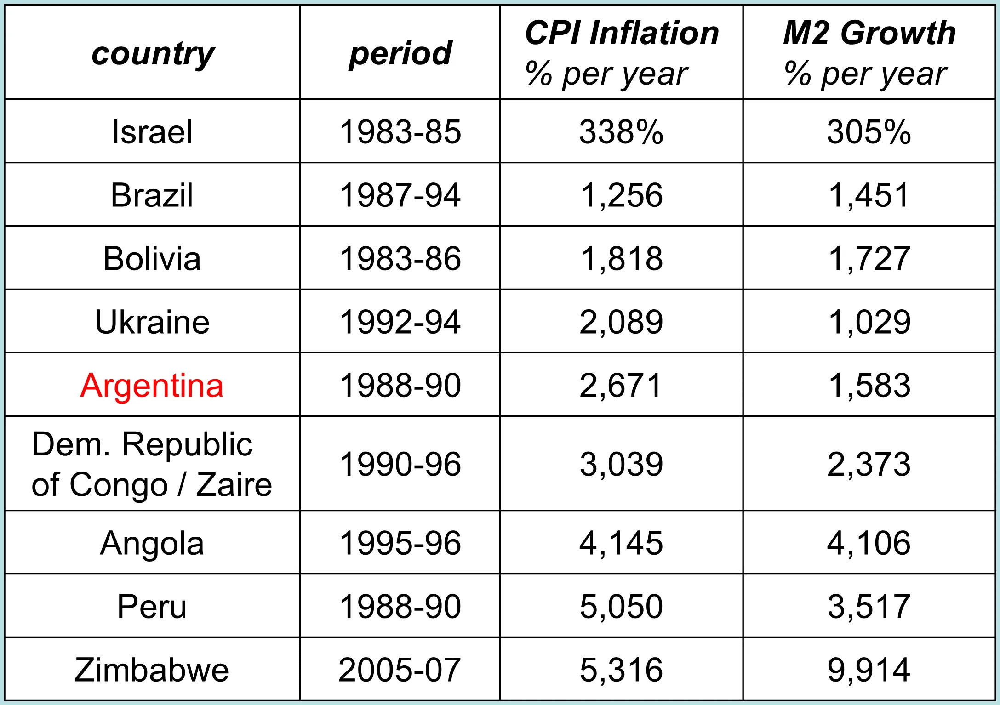
| 国家 | 时期 | CPI 通胀（%/年） | M2 增长（%/年） |
|---|---|---|---|
| 以色列 | 1983–85 | 338% | 305% |
| 巴西 | 1987–94 | 1,256 | 1,451 |
| 玻利维亚 | 1983–86 | 1,818 | 1,727 |
| 乌克兰 | 1992–94 | 2,089 | 1,029 |
| 阿根廷 | 1988–90 | 2,671 | 1,583 |
| 刚果民主共和国/扎伊尔 | 1990–96 | 3,039 | 2,373 |
| 安哥拉 | 1995–96 | 4,145 | 4,106 |
| 秘鲁 | 1988–90 | 5,050 | 3,517 |
| 津巴布韦 | 2005–07 | 5,316 | 9,914 |
教师备注（原文＋译文）8 段
教师备注（原文照录）
Source: World Development Indicators, World Bank.
Notes:
The inflation and money growth figures are computed as annual averages from the end of the first year to the end of the last year shown in each period.
During 2008, Zimbabwe's hyperinflation continued and became spectacular. The table on this slide excludes 2008 data because it is missing from the WDI database. It's easy to find estimates of Zimbabwe's 2008 inflation, for example here: http://www.cato.org/zimbabwe. However, I cannot verify their reliability or find good data on Zimbabwe's money supply in 2008.
教师备注（译文）
来源：世界银行《世界发展指标》。
注：
通胀与货币增长数字按各时期首年末到末年末的年平均值计算。
2008 年，津巴布韦的恶性通胀仍在继续并变得惊人。本表不含 2008 年数据，因为 WDI 数据库中缺失。津巴布韦 2008 年通胀的估计值很容易找到，例如 http://www.cato.org/zimbabwe。但我无法核实其可靠性，也找不到 2008 年津巴布韦货币供给的可靠数据。
- 表格按通胀率升序排列：以色列 338% 最低，津巴布韦 5,316% 最高。
- 规律：通胀率与 M2 增长率同量级（多数国家两者相差在 1 倍以内），这是数量论在极端情形的验证。
- 两个例外值得注意：乌克兰（通胀 2,089% 远高于 M2 增长 1,029%）与津巴布韦（M2 增长 9,914% 远高于通胀 5,316%）——说明短期内 V 也在变。
- 津巴布韦 2008 年的真实通胀远高于表中 2005–07 的均值（见 1-10 的 796 亿%），备注说明了数据缺失的原因。
5-54Why governments create hyperinflation
| 原文 | 中文对照 |
|---|---|
| Why governments create hyperinflation | 政府为何制造恶性通胀 |
| When a government cannot raise taxes or sell bonds, it must finance spending increases by printing money. | 当政府无法增税或卖出债券时，它只能靠印钞为支出增加融资。 |
| In theory, the solution to hyperinflation is simple: stop printing money. | 理论上，恶性通胀的解法很简单：停止印钞。 |
| In the real world, this requires drastic and painful fiscal restraint. | 在现实世界，这需要剧烈而痛苦的财政紧缩。 |
教师备注（原文＋译文）4 段
教师备注（原文照录）
Before revealing the contents of this slide, you might consider asking students the following question:
"Solving the problem of hyperinflation is easy. Why, then, do governments allow hyperinflation to occur?"
教师备注（译文）
在显示本页内容之前，可以考虑先问学生这个问题：
「解决恶性通胀很容易。那么，政府为什么允许恶性通胀发生？」
- 根源是财政，不是货币：税收能力不足 + 借债能力耗尽 → 只剩印钞一条路。
- 「理论简单、现实困难」的张力：停印钞意味着削减支出或增税，两者都政治上代价高昂（对照 1-23 希腊紧缩的政治后果）。
- 因此恶性通胀的终结往往需要财政制度改革，而不只是央行转向（5-60）。
5-55The classical dichotomy（古典二分法）
| 原文 | 中文对照 |
|---|---|
| The classical dichotomy（古典二分法） | 古典二分法 |
| Real variables: Measured in physical units—quantities and relative prices, for example: | 实际变量：以实物单位衡量——数量与相对价格，例如： |
| quantity of output produced | 生产的产出数量 |
| real wage: output earned per hour of work | 实际工资：每小时劳动赚到的产出 |
| real interest rate: output earned in the future by lending one unit of output today | 实际利率：今天借出一单位产出、未来赚到的产出 |
| Nominal variables: Measured in money units, e.g., | 名义变量：以货币单位衡量，例如： |
| nominal wage: Dollars per hour of work. | 名义工资：每小时工作的美元数 |
| nominal interest rate: Dollars earned in future by lending one dollar today. | 名义利率：今天借出一美元、未来赚到的美元数 |
| the price level: The amount of dollars needed to buy a representative basket of goods. | 价格水平：购买一篮子代表性商品所需的美元数。 |
- 判别标准：单位是实物还是货币。同一概念可以有两种表述（实际工资 vs 名义工资、实际利率 vs 名义利率）。
- 三组对照要能各举一例（见上表），这是本章最基础的概念区分。
5-56The classical dichotomy（货币中性）
| 原文 | 中文对照 |
|---|---|
| The classical dichotomy | 古典二分法 |
| Recall: Real variables were explained in Chapter 3, nominal ones in Chapter 5. | 回忆：实际变量在第 3 章解释，名义变量在第 5 章解释。 |
| Classical dichotomy: the theoretical separation of real and nominal variables in the classical model, which implies nominal variables do not affect real variables. | 古典二分法：古典模型中实际变量与名义变量的理论分离，它意味着名义变量不影响实际变量。 |
| Neutrality of money（货币中性）: Changes in the money supply do not affect real variables. | 货币中性：货币供给的变化不影响实际变量。 |
| In the real world, money is approximately neutral in the long run. | 在现实世界中，货币在长期近似中性。 |
- 两个概念的关系：二分法是方法论主张（可以分开研究），货币中性是 substantive 结论（名义不影响实际）。
- 本章的证明路径：Y 由第 3 章决定（不含 M）→ M 只决定 P（5-13）→ 故 M 不影响 Y、r、W/P 等实际变量。
- 「approximately … in the long run」是重要的限定：短期货币非中性（第 11–15 章），长期近似中性。
5-57CHAPTER SUMMARY（第 1 帧）
| 原文 | 中文对照 |
|---|---|
| CHAPTER SUMMARY | 本章总结 |
| Velocity: the ratio of nominal expenditure to money supply, the rate at which money changes hands | 流通速度：名义支出与货币供给之比，即货币易手的速率 |
| Quantity theory of money | 货币数量论 |
| assumes velocity is constant | 假设流通速度不变 |
| concludes that the money growth rate determines the inflation rate | 结论是货币增长率决定通胀率 |
| applies in the long run | 适用于长期 |
| consistent with cross-country and time-series data | 与跨国数据和时间序列数据一致 |
- 数量论的四个要点构成一个完整论证：假设（V 不变）→ 结论（ΔM 决定 π）→ 适用范围（长期）→ 证据（两类数据）。
5-58CHAPTER SUMMARY（第 2 帧）
| 原文 | 中文对照 |
|---|---|
| CHAPTER SUMMARY | 本章总结 |
| Nominal interest rate | 名义利率 |
| equals real interest rate + inflation rate | 等于实际利率 + 通胀率 |
| the opportunity cost of holding money | 是持有货币的机会成本 |
| Fisher effect: Nominal interest rate moves one-for-one with expected inflation. | 费雪效应：名义利率与预期通胀一一同向变动。 |
| Money demand | 货币需求 |
| depends only on income in the quantity theory | 在数量论中只取决于收入 |
| also depends on the nominal interest rate | 也取决于名义利率 |
| if so, then changes in expected inflation affect the current price level | 若如此，预期通胀的变化会影响当前价格水平 |
- 三个层次：费雪方程（i = r + π）→ 费雪效应（Δi = ΔEπ）→ 对物价的反馈（5-37）。
- 最后一行的逻辑链是本章最精妙的部分：Eπ↑ → i↑ → 货币需求↓ → P↑（给定 M）。
5-59CHAPTER SUMMARY（第 3 帧）
| 原文 | 中文对照 |
|---|---|
| CHAPTER SUMMARY | 本章总结 |
| Costs of inflation | 通胀的成本 |
| Expected inflation shoeleather costs, menu costs, tax & relative price distortions, inconvenience of correcting figures for inflation | 预期到的通胀：鞋底成本、菜单成本、税收与相对价格扭曲、校正名义值的不便 |
| Unexpected inflation all of the above plus arbitrary redistributions of wealth between debtors and creditors | 未预期到的通胀：以上全部，加上债务人与债权人之间财富的任意再分配 |
- 记忆结构：五项（预期到的）+ 一项（未预期的再分配）+ 一项（不确定性）= 七项成本。
- 「未预期通胀包含预期通胀的全部成本」这一点常被忽略：未预期通胀同样有菜单成本等，只是额外多了再分配。
5-60CHAPTER SUMMARY（第 4 帧）
| 原文 | 中文对照 |
|---|---|
| CHAPTER SUMMARY | 本章总结 |
| Hyperinflation | 恶性通胀 |
| caused by rapid money supply growth when money printed to finance govt budget deficits | 由为政府预算赤字融资而快速印钞所引起的货币供给快速增长导致 |
| stopping it requires fiscal reforms to eliminate govt's need for printing money | 终止它需要财政改革，以消除政府印钞的需要 |
- 因果链要写全：财政赤字 → 无法增税/借债 → 印钞 → 货币快速增长 → 恶性通胀。
- 解法必须落在财政而非货币：这是 5-54 的结论，也是考试论述题的标准落点。
5-61CHAPTER SUMMARY（第 5 帧）
| 原文 | 中文对照 |
|---|---|
| CHAPTER SUMMARY | 本章总结 |
| Classical dichotomy | 古典二分法 |
| In classical theory, money is neutral—does not affect real variables. | 在古典理论中，货币是中性的——不影响实际变量。 |
| So, we can study how real variables are determined w/o reference to nominal ones. | 因此，我们可以在不涉及名义变量的情况下研究实际变量如何决定。 |
| Then, money market eq'm determines price level and all nominal variables. | 然后，货币市场均衡决定价格水平与所有名义变量。 |
| Most economists believe the economy works this way in the long run. | 多数经济学家相信经济在长期是这样运行的。 |
- 三步方法论：先解实际部分（第 3 章）→ 再解名义部分（第 5 章）→ 两者互不干扰。这就是「二分」的操作含义。
- 最后一句是限定：长期成立，短期不成立（价格黏性使货币非中性）。
- 本章与第 3 章合起来，构成全课的「长期模型」；第 11 章起才转向短期。